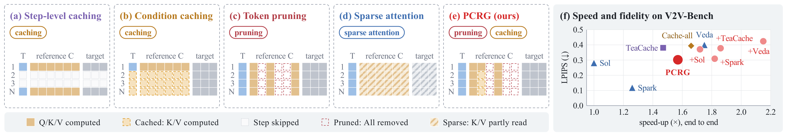
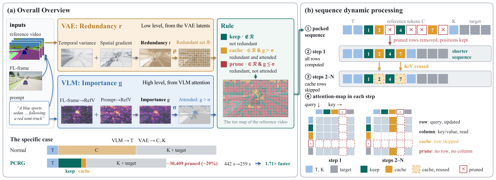
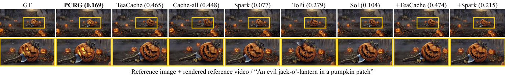
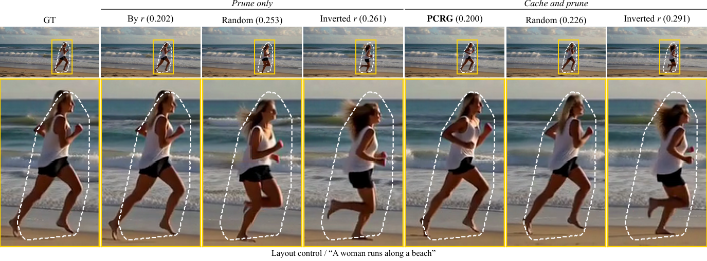
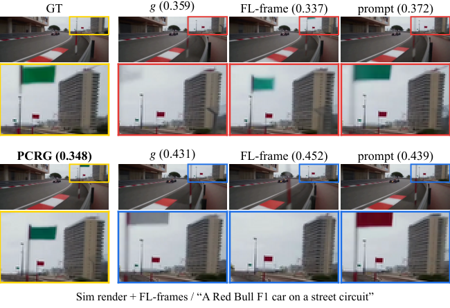

Reference tokens fill half of a reference-to-video transformer's sequence, yet most of them are static, smooth or never read. PCRG prunes some, caches some and keeps the rest, using signals the model already computes.
Attention cost grows with the square of sequence length, so reference tokens take an even larger share of compute than of the sequence. PCRG scores each token with two signals that come for free and sorts it into one of three tiers before the first denoising step.
Not redundant: the latent changes over time or differs from its neighbours. Processed as usual.
Redundant but important: the prompt or first/last frames attend to it. Keys and values are computed at step 1 and reused.
Redundant and unimportant. Leaves the sequence before step 1, with every RoPE position unchanged.

Caching and pruning. Each grid shows tokens by steps. (a) Step-level caching skips whole steps. (b) Condition caching keeps all keys and values but stops updating. (c) Pruning removes the tokens entirely. (d) Sparse attention keeps every token but reads only part of the keys and values. (e) PCRG combines caching and pruning for the reference tokens. (f) Speed and fidelity on V2V-Bench.
A low-level redundancy r comes from the VAE latents: a token whose latent barely changes over time or across its neighbours adds little. A high-level importance g comes from the VLM conditioner: the attention the prompt and any first or last frames pay to a token tells whether the output needs to read it. PCRG shortens the sequence instead of changing how attention is computed or which steps run, so it stacks on step caching and sparse attention.

(a) Before step 1, the redundancy r of the VAE latents selects the redundant set, the most redundant fraction ρ of each block; the importance g from the VLM marks cells with g > σ as attended. (b) Pruned rows leave the packed sequence and the remaining tokens keep their RoPE (①). Step 1 computes every remaining row (②). Steps 2–N skip the cached rows and reuse their keys and values from step 1 (③). In the attention maps (④), from step 2 on, a cached token keeps its key column but loses its query row, and a pruned token has neither.
VACE-Benchmark requests on MiniMax-H3. Left of the handle is the unpruned output; right is PCRG alone or stacked with a step cache. Drag the handle to compare.
End-to-end speed against the unpruned model and fidelity to its output with the same seed. Every row runs on the same 8-step int8 MiniMax-H3.
Speed, PSNR, SSIM and LPIPS are end to end against the unpruned output. Judge is a pairwise VLM score against it. VB-Q is the mean of six VBench quality dimensions in percent.

Qualitative comparison on a V2V-Bench request. GT is the unpruned output; the number in parentheses is the LPIPS to it. +TeaCache and +Spark combine PCRG with TeaCache and Spark.

Redundant-set selection on a layout-control request of VACE-Benchmark. The white dashed line is the runner outline from the layout control input, drawn at the same place in every panel.

Pruning 60% of the reference cells by importance, no cache. Red: least-attended cells dropped first. Blue: most-attended dropped first. Yellow: GT and PCRG.
@article{pcrg2026,
title = {PCRG: Training-Free Pruning and Caching of Reference Tokens for Video Generation},
author = {Siyuan Wang and Haoran Li and Yi Yue and Tak L. Fung and Quan Chen},
journal = {arXiv preprint arXiv:2611.22717},
year = {2026}
}